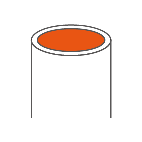

NINE9 · TOOL FINDER
Find a drill family for your hole diameter, depth and workpiece material.

Loading catalog data…
Finished hole diameter. Tolerance deviations are optional.
Optional tolerance: upper / lower deviation in mm.
Required depth measured from the workpiece surface.
Filters tools and cutting data by material suitability.
YOUR OPTIONS
Enter your job requirements to compare standard bodies.
Bodies are sorted by catalog drilling depth T. Choose the shortest body that meets your required depth.